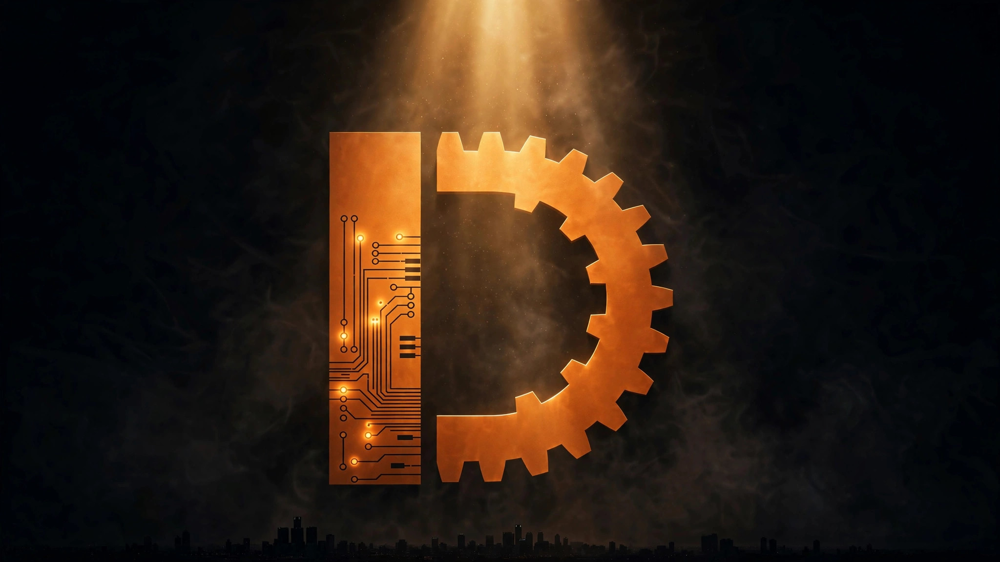

The Signal · Edition 2 · September 2026
BIOBUZZ, Week Two: The Three Bets That Win This Season
Published September 25, 2026 · Read on LinkedIn

The game reveal was two weeks ago. Kickoff watch parties are over. The whiteboards are full, the field kits are arriving, and teams across the world are making the first irreversible decisions of their season — what to build first, what to practice, where to bet their limited build hours.
Here is the coach's read on the three bets that will decide BIOBUZZ.
The season is real now
More than 120,000 students worldwide are expected to take part in this season's FIRST Tech Challenge, which FIRST is calling BIOBUZZ presented by RTX — part of the 2026–27 FIRST CANOPY season. The biodiversity theme is pollination. The field is built around it: pollen, nectar, hives, flowers, gardens.
Kickoff events drew teams together to stream the reveal and tear the game apart in real time. Registration is open and qualifying tournaments are already on the calendar — league play starts as early as November in some regions. The clock is running.
Bet #1: The launcher wins this season
Every hive tip is 20 points, and the only legal way to tip a hive is launching into the upward-facing chamber. Ram the frame and you'll draw a warning — do it to gain an edge and it's a major foul. Camp under the hive with an open intake and the refs will warn you — spilled elements have to hit the floor first.
So the launcher is not one subsystem among many. It is the season's bottleneck. An accurate launcher tips hives; hives tip matches. Everything else — drivetrain, intake, lift — exists to feed the launcher or defend against someone else's.
The practical question for every team: can your launcher hit the upward chamber from across the field, repeatedly, under defense? If the answer is yes, you have a robot worth building around. If not, nothing downstream matters yet.
Bet #2: The last 60 seconds are the whole match
The flowers hang on the walls and only score in the final minute. Load them from the top. Whoever's nectar sits top-most owns the flower — and the owner scores 2 points for every element inside, no matter who put it there.
That mechanic flips endgame strategy on its head. A flower stuffed with pollen is not a points bank; it is a prize waiting for a new owner. The final minute is not an endgame. It is the whole match, compressed — a sprint for flower ownership where positioning beats accumulation.
And the entry gates hard: nectar entering a flower before the last 60 seconds is a major foul per element. Practice the endgame as an endgame.
Bet #3: The human player is a real position
One detail keeps getting underrated. Nectar enters the field one-per-hive-tip — or all-remaining under 60 seconds — only through the loading zone, and the human player may use no tools. That person feeds every piece of nectar your robot will ever score.
Human players used to be whoever wasn't driving. This season, the position has mechanics worth training: feeding under pressure, cycling quickly and cleanly, reading the field while the driver reads the robot. Treat it like a position — reps, drills, and a named person who owns it — and it becomes an edge. Treat it as an afterthought and every possession starts behind.
What week-one whiteboards look like
River City Robotics, an Edmonton-area program, published their week-one whiteboard — and it's representative of what good week-one thinking looks like: a drivetrain that's quick and doesn't mind getting bumped, an intake that scoops both ball sizes off the floor, a launcher accurate enough to hit the hive cell from across the field, a camera reading the AprilTags under the hive so the robot knows which way it tipped, and an autonomous routine that launches the four preloaded pollen, leaves the wall, and parks.
Notice the shape of that list. Launcher accuracy. Floor-level intake. Orientation sensing. Autonomous banking. None of it is exotic — it is the fundamentals, aimed at the three bets.
What we're doing about it
Our fall cohort is in week two of the four-week practice plan: launcher tuning and spill recovery this week, flower sprint drills next, then full scrimmages with refs calling the real fouls. Month one is about three things — a launcher that tips hives, an autonomous routine that banks points, and an endgame that wins the last minute. Everything else can wait.
The Signal is the newsletter of Detroit Automation Academy — where Detroit builds what's next. New editions monthly. If you know a young builder who should be in the room, send them our way.